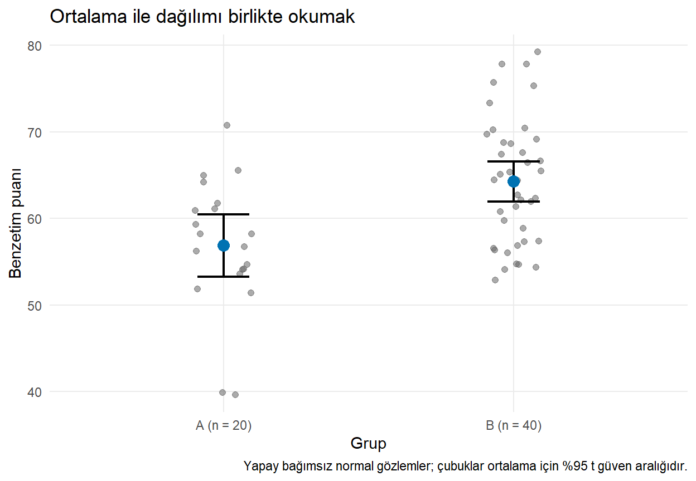
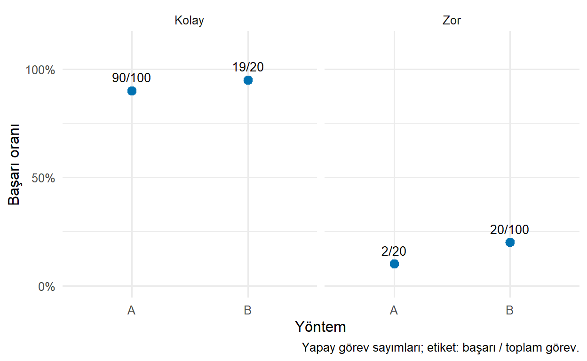
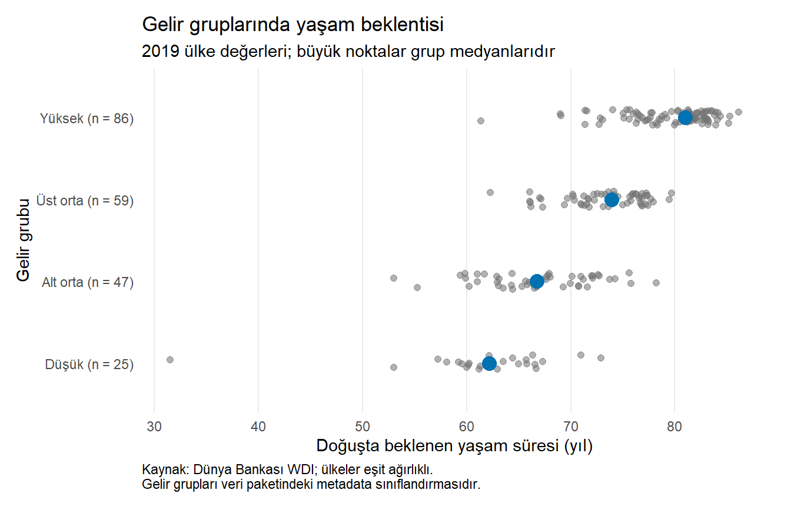

library(ggplot2)
set.seed(2026)
puanlar <- data.frame(
grup = rep(c("A", "B"), times = c(20, 40)),
puan = c(rnorm(20, mean = 60, sd = 8), rnorm(40, mean = 64, sd = 8))
)
ozet <- puanlar |>
dplyr::group_by(grup) |>
dplyr::summarise(n = dplyr::n(), ortalama = mean(puan),
ss = sd(puan), .groups = "drop") |>
dplyr::mutate(
sh = ss / sqrt(n),
hata_payi = qt(0.975, df = n - 1) * sh,
alt = ortalama - hata_payi,
ust = ortalama + hata_payi
)
ozet27 Etkili ve Yayın Kalitesinde Grafikler
Yayın kalitesi, grafiğin yalnızca keskin görünmesi değildir. Veri kapsamının açık, ölçümün doğru, belirsizliğin anlaşılır ve görsel mesajın kanıtla uyumlu olması gerekir. Şık bir grafik yanlış bir çıkarımı daha ikna edici hale getirebilir; bu nedenle bilimsel denetim görünüm düzenlemesinden önce gelir.
Önceki bölümlerde grameri, geometrileri, panelleri, ölçekleri ve temaları öğrendik. Şimdi bunları tek bir soruda birleştireceğiz: Bu grafiği gören okuyucu verinin desteklediği sonucu, gerekli sınırlılıklarıyla birlikte anlayabilir mi? (Wilke 2019)
27.1 Öğrenme Hedefleri ve Ön Koşullar
Bu bölümün sonunda bir grafiği araştırma sorusu, veri kapsamı, belirsizlik ve erişilebilirlik açısından değerlendirebilecek; ham dağılımı özetle birlikte gösterebilecek; payda ve toplulaştırma sorunlarını fark edebilecek; bir yayın grafiğinin yeniden üretilebilir taslağını hazırlayabileceksiniz. Part IV’ün önceki bölümleri ön koşuldur.
27.2 Grafik Üretmeden Önce Kısa Bir Tasarım Notu
Koddan önce birkaç cümle yazmak, görsel kararların amacını korur:
- Soru: Hangi farkı veya ilişkiyi inceliyorum?
- Veri: Gözlem birimi, dönem, birim ve örneklem nedir?
- Mesaj: Verinin desteklediği ana bulgu nedir?
- Sınırlılık: Eksiklik, örnekleme, ölçüm ve araştırma tasarımı neyi söylememe izin vermiyor?
- Okuyucu ve ortam: Grafiği kim, hangi boyutta ve hangi arka planda okuyacak?
Bu not keşif sırasında değişebilir. Ancak son grafikte yalnızca beklenen sonucu destekleyen gözlemleri seçmek için kullanılmamalıdır. Sadeleştirme, anlamlı karşıt bilgiyi gizlememelidir.
27.3 Örnek: İki Grubun Puanlarını Karşılaştırmak
Sorumuz: İki grubun ortalama puanları ve grup içi değişkenlik nasıl görünür? Sadece ortalama sütunları çizmek kolaydır; fakat aynı yükseklikler farklı dağılımlardan gelebilir. Bu nedenle ham gözlemler, örneklem büyüklükleri ve ortalama belirsizliğini birlikte ele alacağız.
Veriyi normal dağılımdan benzetimle oluşturuyoruz. Her gözlem bağımsız üretilir; bu varsayımı gerçek bir araştırmaya kendiliğinden taşımayacağız. A’da 20, B’de 40 gözlem vardır. Sayılar ölçülmüş öğrenci puanları değildir; yöntemleri öğrenmek içindir.
ss örneklem standart sapmasıdır; gözlemlerin yayılımını özetler. sh = ss / sqrt(n) bağımsız gözlemler varsayımı altında ortalamanın standart hatasıdır. qt() Student t dağılımının kritik değerini verir; df = n - 1 serbestlik derecesidir. alt ve ust, bu model altında ortalamanın yüzde 95 güven aralığı sınırlarıdır. Bu hesap için eksik gözlem yoktur.
27.3.1 Belirsizlik Türünü Adlandırmak
Standart sapma, standart hata, güven aralığı ve tahmin aralığı aynı şeyi anlatmaz. Grafikte bir aralık çizmek, hangisinin kullanıldığını söylemediğimizde okuyucuyu yanıltabilir.
| Gösterim | Temel anlam |
|---|---|
| Standart sapma | Gözlemlerin merkez çevresindeki yayılımı |
| Standart hata | Bir tahmin edicinin örneklemden örnekleme değişkenliği |
| Ortalama için güven aralığı | Belirtilen yöntemin anakütle ortalamasını kapsama davranışına dayalı aralık |
| Yeni gözlem için tahmin aralığı | Model altında yeni bir gözlemin belirsizliği |
Sıkçı yüzde 95 güven aralığı, sabit bir hesaplanmış aralık için “gerçek ortalama yüzde 95 olasılıkla buradadır” veya “gözlemlerin yüzde 95’i buradadır” anlamına gelmez. Aynı örnekleme ve aralık kurma yöntemi çok kez tekrarlandığında aralıkların yaklaşık yüzde 95’inin gerçek ortalamayı kapsaması hedeflenir. Bu yorum, yöntemin varsayımlarına bağlıdır (Gelman vd. 2020).
Gerçek veride gözlemler aynı sınıftaki öğrenciler gibi bağımlıysa veya örnekleme ağırlıkları varsa bu basit formül uygun olmayabilir. Ölçüm yanlılığı ve seçilme yanlılığı da yalnızca güven aralığı çizerek giderilmez.
27.4 Ham Gözlemi ve Özeti Birlikte Sunmak
p_guven <- ggplot(puanlar, aes(x = grup, y = puan)) +
geom_point(
position = position_jitter(width = 0.1, height = 0, seed = 52),
alpha = 0.55, size = 1.8, colour = "grey40"
) +
geom_errorbar(
data = ozet, aes(x = grup, ymin = alt, ymax = ust),
inherit.aes = FALSE, width = 0.18, linewidth = 0.8
) +
geom_point(data = ozet, aes(x = grup, y = ortalama),
inherit.aes = FALSE, size = 3.5, colour = "#0072B2") +
scale_x_discrete(labels = c("A" = "A (n = 20)", "B" = "B (n = 40)")) +
labs(title = "Ortalama ile dağılımı birlikte okumak",
x = "Grup", y = "Benzetim puanı",
caption = "Yapay bağımsız normal gözlemler; çubuklar ortalama için %95 t güven aralığıdır.") +
theme_minimal(base_size = 11) +
theme(panel.grid.minor = element_blank())
p_guven
geom_errorbar() hazır alt ve üst sınırları çizer; kendi başına güven aralığı hesaplamaz. ymin ve ymax sınırlar, width uç kapaklarının genişliği, linewidth çizgi kalınlığıdır. İki özet katmanı inherit.aes = FALSE ile ham verinin puan sütununa bağımlı değildir. Çizim katmanı ile istatistiksel hesabın ayrılması denetlenebilirliği artırır.
Bu grafikte dağılımların örtüştüğünü ve iki örneklemin farklı sayıda gözlem içerdiğini görüyoruz. Ortalama farkının örneklemdeki sayısal değerini ozet tablosundan okuyabiliriz. İki ayrı güven aralığının örtüşmesini veya ayrılmasını bir fark testinin yerine koymamalıyız; farkın kendisine ait belirsizlik ayrı bir sorudur (Gelman vd. 2020).
ÖnemliBelirsizlik bilgisi yoksa aralık uydurmayın
Bir WDI göstergesi veya hazır ortalama tablosu, gerekli standart hata ve tasarım bilgisini içermeyebilir. Değerin çevresine keyfî yüzde 5 ekleyip “güven aralığı” diye adlandırmak geçerli değildir. Bilinmeyeni açıkça belirtmek, sahte kesinlik üretmekten daha bilgilendiricidir.
27.5 Payda ve Toplulaştırma: Genel Oran Her Şeyi Anlatmaz
İki çalışma yönteminin kolay ve zor görevlerdeki başarı sayıları olsun. Aşağıdaki sayılar tamamen yapaydır; bir deneyin sonucu değildir.
gorevler <- data.frame(
yontem = rep(c("A", "B"), each = 2),
zorluk = rep(c("Kolay", "Zor"), 2),
basari = c(90, 2, 19, 20),
toplam = c(100, 20, 20, 100)
)
gorevler$oran <- gorevler$basari / gorevler$toplam
genel <- gorevler |>
dplyr::group_by(yontem) |>
dplyr::summarise(basari = sum(basari), toplam = sum(toplam),
.groups = "drop") |>
dplyr::mutate(oran = basari / toplam)
gorevlergenelKolay görevlerde B’nin oranı yüzde 95, A’nın yüzde 90; zor görevlerde B’nin yüzde 20, A’nın yüzde 10’dur. Ancak A kolay görevlerde, B zor görevlerde daha çok gözlem içerir. Bütün görevler birleştirildiğinde A yaklaşık yüzde 76,7, B yüzde 32,5 başarı gösterir. Alt gruplardaki karşılaştırmanın yönü genel karşılaştırmada tersine dönmüştür.
Bu örnek Simpson paradoksu olarak bilinen toplulaştırma sorununu görünür kılar (Simpson 1951). Genel oran matematiksel olarak yanlış değildir; farklı zorluk bileşimlerini karşılaştırır. “A daha etkili” sonucu, görev dağılımı ve araştırma tasarımı değerlendirilmeden çıkarılamaz. Alt gruplara ayırmak da otomatik bir nedensellik çözümü değildir; hangi değişkenlerle koşullama yapılacağı araştırma tasarımına bağlıdır.
p_payda <- ggplot(gorevler, aes(x = yontem, y = oran)) +
geom_point(size = 3, colour = "#0072B2") +
geom_text(aes(label = paste0(basari, "/", toplam)), vjust = -0.9, size = 3.5) +
facet_wrap(vars(zorluk)) +
scale_y_continuous(limits = c(0, 1.12), breaks = c(0, 0.5, 1),
labels = scales::label_percent(accuracy = 1)) +
labs(x = "Yöntem", y = "Başarı oranı",
caption = "Yapay görev sayımları; etiket: başarı / toplam görev.") +
theme_minimal(base_size = 12)
p_payda
Yüzde etiketleri 0–1 ölçüsünü kullanır. Üstteki ek boşluk, yüzde 95 etiketinin kesilmemesi içindir; oranların yüzde 100’ü aşabildiği iddiası değildir. Etiketler paydaları görünür kılar. Grafik daha çok ayrıntı içerir; fakat bu ayrıntı doğru karşılaştırma için gereklidir.
27.6 Bütünleşik Uygulama: WDI Grafiğini Yayına Hazırlamak
Tasarım notumuz: 2019 yılında gelir gruplarına göre yaşam beklentisi dağılımını karşılaştıracağız. Her nokta bir ülke/ekonomidir. Nüfusa göre ağırlıklandırma yapmayacağız. Ülke düzeyindeki dağılımı göstereceğiz; bireylerin yaşam süresi dağılımını veya gelir grubunun nedensel etkisini değil.
Önce kategori ve eksikleri kontrol edelim. Dünya Bankası gelir grubu sınıflandırmaları veri paketindeki metadata bilgisidir; tarihsel olarak 2019 sınıflandırması olduklarını doğrulamadan bu iddiayı kullanmamalıyız.
countries <- readr::read_csv("data/countries.csv", show_col_types = FALSE)
gelir_duzeyleri <- c("Low income", "Lower middle income", "Upper middle income", "High income")
countries |>
dplyr::count(income_group, name = "ulke_sayisi")yayina_veri <- countries |>
dplyr::filter(year == 2019, income_group %in% gelir_duzeyleri,
!is.na(life_expectancy_total)) |>
dplyr::mutate(
gelir_grubu = factor(income_group, levels = gelir_duzeyleri,
labels = c("Düşük", "Alt orta", "Üst orta", "Yüksek"))
)
grup_ozeti <- yayina_veri |>
dplyr::group_by(gelir_grubu) |>
dplyr::summarise(n = dplyr::n(), medyan = median(life_expectancy_total),
.groups = "drop")
grup_ozetic(kullanilan = nrow(yayina_veri), dislanan = nrow(countries) - nrow(yayina_veri))kullanilan dislanan
217 0 Bu kod yalnızca tanımlı dört gelir grubuna ve gözlenen yaşam beklentisine sahip 2019 kayıtlarını alır. Kullanılan ve dışlanan sayıları açıkça gösterir. Seçimin kapsamı, farklı bir veri sürümünde de kontrol edilebilir. Medianları medyan olarak adlandırıyoruz; ortalama gibi sunmuyoruz.
grup_etiketleri <- setNames(
paste0(grup_ozeti$gelir_grubu, " (n = ", grup_ozeti$n, ")"),
as.character(grup_ozeti$gelir_grubu)
)
p_yayin <- ggplot(yayina_veri,
aes(x = life_expectancy_total, y = gelir_grubu)) +
geom_point(position = position_jitter(width = 0, height = 0.1, seed = 19),
colour = "grey45", alpha = 0.55, size = 1.7) +
geom_point(data = grup_ozeti, aes(x = medyan, y = gelir_grubu),
inherit.aes = FALSE, size = 4, colour = "#0072B2") +
scale_y_discrete(labels = grup_etiketleri) +
labs(title = "Gelir gruplarında yaşam beklentisi",
subtitle = "2019 ülke değerleri; büyük noktalar grup medyanlarıdır",
x = "Doğuşta beklenen yaşam süresi (yıl)", y = "Gelir grubu",
caption = "Kaynak: Dünya Bankası WDI; ülkeler eşit ağırlıklı.\nGelir grupları veri paketindeki metadata sınıflandırmasıdır.") +
theme_minimal(base_size = 11) +
theme(panel.grid.minor = element_blank(),
panel.grid.major.y = element_blank(),
plot.caption = element_text(hjust = 0),
plot.margin = margin(10, 15, 10, 10))
p_yayin
Bu tasarımda dört ayrı renk yerine ham gözlem–özet ayrımı vurgulanır. Kategori ve örneklem sayıları doğrudan yazıldığı için lejant gerekmez. Düşey kaydırma örtüşmeyi azaltır; yaşam beklentisi konumları değişmez. Medyan farklılıkları görülse de gruplar içinde çeşitlilik ve gruplar arasında örtüşme vardır. Gelir sınıflandırmasıyla yaşam beklentisi arasındaki bu betimsel fark, belirli bir politikanın etkisini ölçmez.
27.6.1 Tasarım Denetimi
| Denetim | Bu örnekteki karar |
|---|---|
| Analiz birimi | Her nokta ülke/ekonomi; birey değil |
| Dönem ve birim | 2019; yıl cinsinden yaşam beklentisi |
| Kapsam | Tanımlı gelir grubu ve gözlenen yaşam beklentisi |
| Özet | Medyan; ham dağılım da görünür |
| Ağırlık | Her ülke bir gözlem; nüfus ağırlığı yok |
| Sınıflandırma | Paket metadata’sı; tarihsel sınıflandırma iddiası yok |
| Belirsizlik | Gerekli örnekleme/model bilgisi olmadan güven aralığı üretilmedi |
| Erişilebilirlik | Konum, kategori yazısı, örneklem sayısı ve alternatif metin |
27.7 Sık Yapılan Hatalar
- Sonucu baştan seçip veri ve dönemi ona göre daraltmak.
- Güven aralığının neye ait olduğunu belirtmemek.
- Ortalama, medyan ve bireysel dağılımı aynı bilgi gibi sunmak.
- Yüzdeleri paydaları olmadan karşılaştırmak veya alt grup yüzdelerinin basit ortalamasını genel oran sanmak.
- Toplulaştırmanın örüntüyü tersine çevirebileceğini gözden kaçırmak.
- Ülke düzeyindeki ilişkiyi doğrudan bireylere taşımak.
- “Yayın kalitesi”ni yalnızca yüksek DPI veya süslü temayla eşitlemek.
27.8 Egzersizler
- Kolay: Standart sapma ile ortalamanın standart hatası hangi farklı değişkenliği özetler?
- Kolay:
geom_errorbar()neden kendi başına yüzde 95 güven aralığı hesaplamaz? - Orta: Görev örneğinde A ve B’nin genel oranlarını başarı ve toplam sayılarından yeniden hesaplayın. Alt grupların yüzdelerini basitçe ortalamak neden uygun değildir?
- Orta: WDI grafiğinin başlığını bir nedensellik iddiası eklemeden kısaltın ve alt başlıkta medyanı açıkça belirtin.
- Zor: Sadece büyük mavi medyan noktaları kalsaydı hangi bilgiler kaybolurdu? Sadece ham noktalar kalsaydı hangi karşılaştırma zorlaşabilirdi?
- Zor: Yalnızca ortalama, minimum ve maksimumu verilen bir tabloda güven aralığı çizebilir misiniz? Eksik bilgileri açıklayın.
27.9 Egzersiz Çözümleri
Çözüm 1: Standart sapma bireysel gözlemlerin yayılımını, standart hata tahmin edicinin örneklemden örnekleme değişkenliğini özetler. Büyük örneklem standart hatayı azaltabilir; bireysel dağılımı daraltmak zorunda değildir.
Çözüm 2: Geometri, verilen ymin ve ymax değerlerini çizer. Bu sınırlar güven aralığı, tahmin aralığı veya başka bir aralık olabilir; hesap ve açıklama araştırmacıya aittir.
Çözüm 3: A için (90 + 2) / (100 + 20), B için (19 + 20) / (20 + 100) kullanılır. Bunlar yaklaşık yüzde 76,7 ve yüzde 32,5’tir. Her alt grubun paydası farklı olduğu için alt grup yüzdelerinin eşit ağırlıklı ortalaması genel oranı vermez.
Çözüm 4:
p_kisa <- p_yayin + labs(
title = "Gelir grupları ve yaşam beklentisi",
subtitle = "2019; küçük noktalar ülkeler, büyük noktalar medyanlardır"
)Bu başlık bir ilişkiyi adlandırır; gelir sınıfının bir müdahale gibi etki yarattığını iddia etmez.
Çözüm 5: Yalnızca medyanlar kalırsa yayılım, uç gözlemler ve örtüşme kaybolur. Yalnızca ham noktalar kalırsa grup merkezlerini hızlı karşılaştırmak zorlaşabilir. İki katman bu nedenle birbirini tamamlar.
Çözüm 6: Genellikle hayır. Örneklem büyüklüğü, yayılım veya tahminin standart hatası, örnekleme tasarımı ve uygun yöntem hakkında bilgi gerekir. Minimum–maksimum aralığı güven aralığı olarak adlandırılamaz.
27.10 Bölüm Özeti
Etkili grafik, soruyu ve kapsamı açık tutar; özetin yanında gerekli dağılım ve belirsizlik bilgisini verir. Paydalar, alt grup bileşimi ve analiz birimi doğru yorumun parçasıdır. Görsel anlatım, verinin desteklediği bulguyu açıklamalı; kanıtı aşan kesinlik veya nedensellik üretmemelidir.
Sonraki bölümde bu grafikleri uygun boyut, çözünürlük ve dosya biçimleriyle kaydederek üretim sürecini tamamlayacağız.
27.11 Kaynaklar ve Ek Okuma
Belirsizlik ve gözlemsel karşılaştırmalar için (Gelman vd. 2020), anlatım ve şekil tasarımı için (Wilke 2019), uygulamalar için (Wickham vd. 2023) önerilir. Aralık çizimleri geom_errorbar() ve ilgili geometriler belgesinde açıklanır (ggplot2, t.y.).